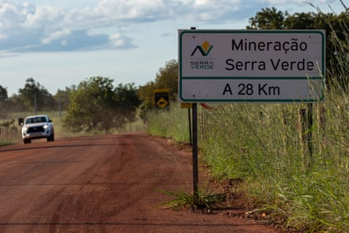
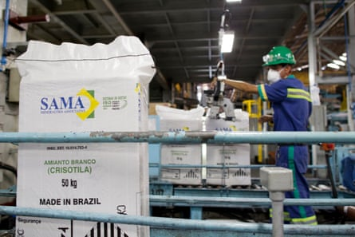
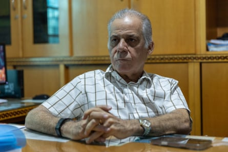
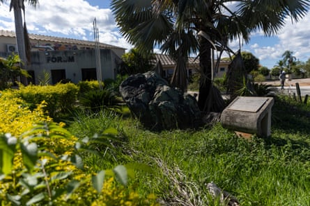
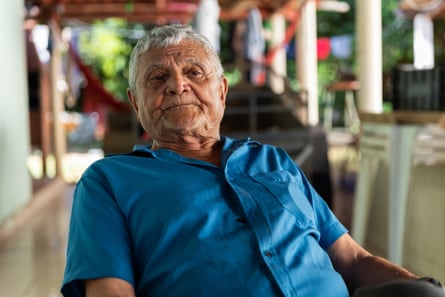
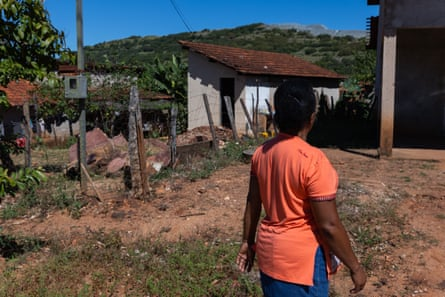
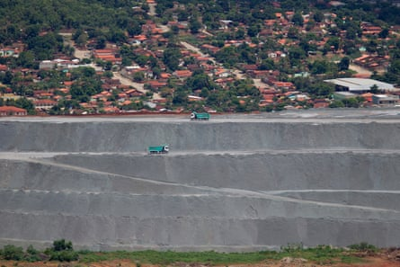

M inaçu, a small city in inland Brazil and home to the only asbestos mine in the Americas, is set to become the first operation outside Asia to produce four rare earths on a commercial scale – a group of minerals key to the energy transition at the centre of the trade dispute between China and the US.
Until now, China has dominated the separation of rare earths, and accounts for 90% of the manufacture of rare-earth magnets , or super magnets, which are made with these elements and used in electric cars, wind turbines and military equipment such as jets.
But in April, China restricted its exports of the minerals in response to US tariffs , causing uncertainty over global supply . Brazil’s incipient production could hardly be better timed. To stimulate the sector, the Brazilian government has issued a call for tenders with an investment forecast of 5bn reals (£670m) in projects related to the supply of strategic minerals, such as rare earths.
With the second-largest known reserves of rare earths in the world, Brazil appears to be a strategic alternative to China, says Constantine Karayannopoulos, an industry expert. “I’ve been evaluating [this market] around the world for years, and I think Brazil has by far the best deposits of rare earths,” he says.
The Brazilian new frontier is in Minaçu, 237 miles (382 km) from the capital, Brasília, where a mining company controlled by an American fund began extracting rare-earth minerals in 2024 with the aim of export – to China.

Minaçu’s asbestos mine has left three huge open pits in the mountains and used to shake the town with its explosions.Photograph: José Cícero/The Guardian
The town of 27,000 inhabitants was founded around the exploitation of asbestos, a mineral used in construction and which boosted the local economy for decades. But in 2017 all production and trade of the mineral was banned by the Brazilian supreme court due to its harmful effects on health. Today, more than 65 countries have banned or restricted the use of asbestos.
In 2019, the state of Goiás reauthorised asbestos production solely for export, but the constitutionality of the law has been under review by the supreme court since then, threatening the future of mining in Minaçu – until the discovery of rare earth elements.
Rare earths are a group of 17 elements with high magnetism and the ability to absorb light, features that make them essential for the transition to clean energy. Some of the most coveted are neodymium, praseodymium, dysprosium, and terbium – used in the manufacture of electric motors and wind turbines, two industries that fuel the demand for rare earths, which have doubled globally between 2015 and 2023.
The complex and expensive separation of these elements is done almost entirely in China, which has invested heavily in the industrial chain since the 1990s.
Now, the Serra Verde mining company, controlled by Denham Capital, an American investment fund, wants to be the first outside Asia to produce a concentrate containing the four main rare earths used in super magnets on a commercial scale.
The Serra Verde mining company wants to be the first outside Asia to produce a concentrate containing the four main rare earths on a commercial scale.Photograph: José Cícero/The Guardian
The operation is based on one of the largest deposits of ionic clay outside south-east Asia. Unlike the hard rock deposits found in Australia and the US, clay extraction is less expensive and less environmentally aggressive.
F or Minaçu, rare earths are the promise of a fresh start. In 2017, Sama, a subsidiary of the Belgian multinational Eternit, was compelled to halt the asbestos mining that for 50 years had shaped the town. The temporary permit granted for export extraction two years later permitted it to keep operating, but with diminished capacity.
So Serra Verde’s licence, granted by the state in 2019 to explore rare earths, was met with enthusiasm locally. “When [Sama] closed down, it was a shock,” says Hivan Soares, 39. “But then there was that expectation of Serra Verde’s arrival.”
Before the 1962 Cana Brava asbestos deposit discovery, the savannah near Chapada dos Veadeiros was inhabited by the Indigenous Avá-Canoeiro people and a few miners. Sama built the first houses and paved streets – using asbestos – and established a hospital, police station and school.
The mine and the town were so connected that in the 1970s and 1980s, Minaçu’s houses, cars and trees were covered in fine white dust from the mine tailings. Older residents remember when it used to “snow” in the village.
“Until 2019, Sama was a mother to the city,” says Hivan Soares, a former employee of the company, about its nickname.
A worker bags chrysotile, or white asbestos, at the Cana Brava mine in Minaçu, January 2013.Photograph: Ueslei Marcelino/Reuters
Half a century later, Minaçu remains heavily dependent on mining. “It’s a city produced by and for mining capital,” says geographer Fábio Macedo Barbosa, who studied Minaçu for his PhD thesis.
Still, not even at its peak did asbestos mining translate into economic diversification and increased local wealth. According to the Brazilian government, 32% of families in Minaçu are living in poverty.
Between 2014 and 2020, royalties paid to the municipality did not reduce dependence on welfare, says researcher Agnes Serrano, who wrote a PhD thesis on Minaçu at the University of Brasília.
Ricardo Gonçalves, a geography professor at the State University of Goiás, came to the same conclusion after analysing the number of people living in poverty between 2015 and 2022. “The fact that more than 20% of the population remains socially vulnerable shows that the profits from asbestos mining do not result in quality of life for the local population,” he says.
Carlos Alberto Leréia, mayor of Minaçu.Photograph: José Cícero/The Guardian
Yet, liberal mayor Carlos Alberto Leréia has high expectations that Serra Verde will boost revenue from mining royalties in the coming years. For this to happen, production must still increase. The operation start was delayed from 2022 to January 2024, and the only two shipments to China, totalling 60 tons in September and 419 tons in February, are far from the 5,000-ton yearly goal.
“It will bring enormous wealth to the city,” Leréia believes.
A bundant, easy to extract, flexible, heat- and fire-resistant, asbestos was widely used in building materials such as roof tiles and water tanks – and still is in countries including India, Bangladesh, Indonesia and Thailand, the main buyers of Minaçu’s ore. The US also imports Minaçu asbestos for the oil industry.
But studies raise questions about the health impacts and environmental damage of mining for asbestos .
A large rock of asbestos at the entrance to the Minaçu courthouse.Photograph: José Cícero/The Guardian
Inhaling asbestos ore fibres can cause serious diseases such as asbestosis, pleural plaques, lung cancer and mesothelioma. WHO data reports more than 200,000 deaths globally from asbestos exposure, with 70% due to work-related cancers.
In Brazil, 3,057 deaths from asbestos-related diseases occurred between 1996 and 2017, but this figure is likely under-reported. “Several factors contribute to the invisibility of asbestos sufferers,” says Fernanda Giannasi, founder of the Brazilian Association of People Exposed to Asbestos. “Between first exposure and diagnosis, the latency period can be decades. And many doctors lack knowledge, and don’t always ask if patients have had contact with asbestos in the past.”
Raimundo Ferreira de Lima, 75, one of the first residents of Minaçu and a former Sama employee.Photograph: José Cícero/The Guardian
Residents of Minaçu keep a “pact of silence” about asbestos’s effects on workers’ health. Few are as critical as Raimundo de Lima. He says he knew many former workers who died of lung problems. “In the old days, we said such and such a person died clogged by ore blockages,” he says.
When asked about health concerns, Eternit, Sama’s parent company, did not comment.
Serra Verde claims to be a “sustainable” mining company, highlighting that its extraction is done in shallow holes, without the use of explosives or crushing, using only water and salt to process the ores. The method contrasts with asbestos mining, which left three huge open pits in the mountains and used to shake the city with explosions.
Residents living near the mine are nonetheless concerned about the potential environmental effects. Families report that since mining began, two streams in Serra Verde have become muddy, with a greasy substance turning clear water a reddish colour. They also reported miscarriages in cattle drinking water from the same source.
Families report that company representatives have visited their properties to collect water samples, but have not yet provided residents with an explanation.
A woman looks towards the mine from her backyard. Residents are concerned about potential environmental and health impacts.Photograph: José Cícero/The Guardian
In a statement, Serra Verde commented on the company’s economic prospects, but has not answered specific questions about the water.
Maintaining a positive image in Brazil is crucial for the company as it seeks to differentiate itself from those mining in Asia, where problems have already been identified in the extraction of rare earths.
In China, the government shut down several ionic clay mines due to their environmental impact. Extraction then migrated to Myanmar, where there have been reports of ammonium nitrate contamination of soils and rivers.
“Now, all the heavy rare earths refined in China come from Myanmar,” says Karayannopoulos, who has already been approached by clients willing to eliminate Myanmar from the global rare earth chain.
Serra Verde says its extraction of rare earths is done in shallow holes, without the use of the explosives used for asbestos.Photograph: Ueslei Marcelino/Reuters
Still, Brazil is a long way from becoming an alternative, as a complete industrial strategy is needed for the country to play a greater role in the rare earths production chain. Experts say the country needs investment not only in extraction but also in refineries for separating rare earths, specialised labour, identification of customers outside China and strengthening of domestic demand for super magnets and electric vehicles.
Mineral extraction has so far brought more promises than social development to Minaçu. Residents such as Lima believe life mining rare earths will bring no greater prosperity to for most than when they lived with asbestos. “These rare earths are now the same,” he says.
- This report is a partnership between Agência Pública and the Guardian. Read it in Portuguese here